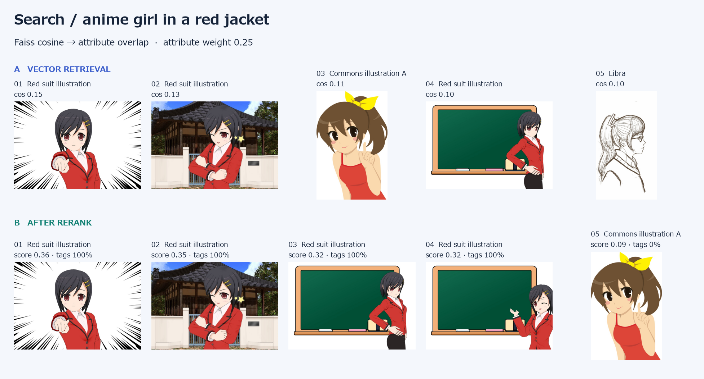
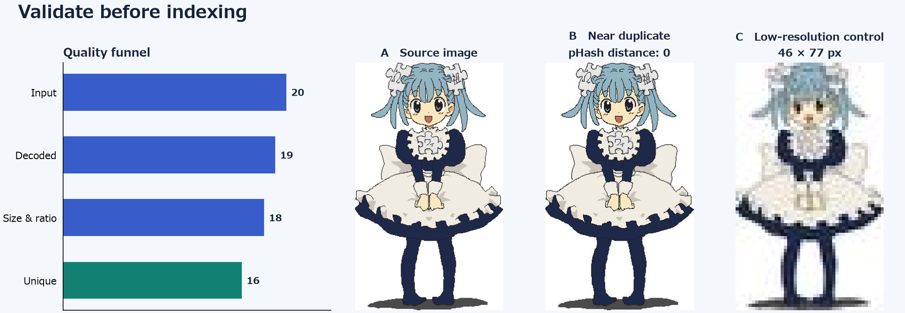

画像検索・データ整備
キャラクター検索
利用許諾のあるイラストを収集し、品質を確認して重複を除去。日本語・英語のテキストや画像から検索し、キャラクター属性で結果を再順位付けします。
- 収集 → インデックス
- 17 → 16
- Recall@5
- 75% → 100%
Recall@5 は赤いジャケットのクエリ1件の結果。該当4枚のうち、上位5件に入った画像が3枚から4枚に増えました。品質図には検証用の3枚を含みます。
Python · pHash · WD14 · SigLIP 2 · Faiss
GitHub で実装を見る
